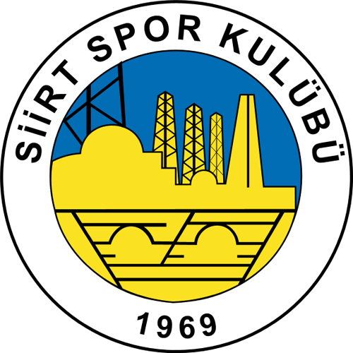
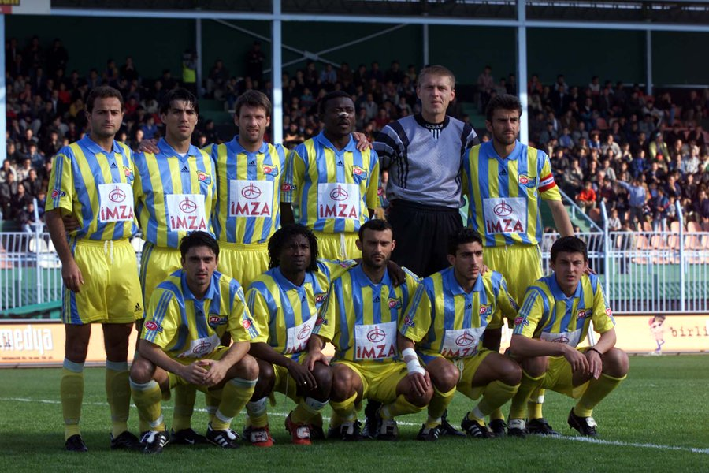

<div class="main-card">
    <div class="row">
        <div class="col-12">
            <h1>Siirt Spor Kulübü</h1>
        </div>
        <div class="col-12 col-md-9 order-1">
            <p>
                Siirt Spor, 1955 yılında kurulmuş olan bir futbol kulübüdür. Siirt ilinin spor tarihinde önemli bir yere
                sahip olan kulüp, yıllar içinde başarılı performanslarıyla adından söz ettirmiştir.
            </p>
            <p>
                Siirt Spor, kurulduğu günden bu yana Türkiye futbolunun farklı liglerinde mücadele etmiştir. Kulüp,
                zaman zaman Süper Lig'e yükselmeyi başarmış ve Türk futbolunun en üst düzeyinde mücadele etmiştir.
            </p>
            <p>
                Siirt Spor, taraftarlarıyla da ünlüdür. Siirt halkı, her maçta takımlarını coşkuyla destekler ve
                tribünlerde renkli görüntüler oluşturur. Taraftarlar, Siirt Spor'un maçlarında büyük bir heyecan ve
                bağlılıkla yer alır.
            </p>
            <p>
                Siirt Spor, geçmişte birçok başarıya imza atmıştır. Bu başarılar arasında lig şampiyonlukları, kupa
                kazanımları ve ulusal turnuvalarda elde edilen başarılı sonuçlar bulunmaktadır. Kulüp, bu başarılarıyla
                Siirt ilinin futbol tarihine damga vurmuştur.
            </p>
            <p>
                Siirt Spor, bugün de futbol camiasında önemli bir yere sahiptir. Siirt ilinin gururu olan kulüp, genç
                yetenekleri keşfetme ve geliştirme konusunda da önemli çalışmalar yapmaktadır. Siirt Spor, gelecek
                nesillere futbol sevgisini aşılamayı hedeflemektedir.
            </p>
        </div>
        <div class="col-12 col-md-3 order-2">
            
        </div>
        <div class="col-12 col-md-5 mt-3 order-4 order-md-3">
            
            <p class="text-center">(2000-2001 sezonu Siirt Spor)</p>
        </div>
        <div class="col-12 col-md-7 mt-3 order-3 order-md-4">
            <p>
                Siirtspor, ilk kez 1993-1994 sezonunda Süper Lig'e yükselme başarısı gösterdi. Bu sezon, kulübün
                tarihindeki en büyük başarılardan biriydi. Siirtspor, Süper Lig'de mücadele eden diğer takımlara karşı
                zorlu maçlar oynadı ve genç bir kadro ile dikkat çekti. Ancak, takımın Süper Lig macerası bir sezonla
                sınırlı kaldı ve 1994-1995 sezonunda tekrar 1. Lig'e düştü.
                Siirtspor, ikinci kez Süper Lig'e yükselme başarısı gösterdiği dönem ise 2000-2001 sezonuydu. Bu sezon,
                Siirtspor'un tarihindeki ikinci Süper Lig macerası oldu. Kulüp, bir kez daha Türkiye'nin en üst düzey
                futbol liginde mücadele etti. Ancak, takım bu sezonu da küme düşerek tamamladı ve 2001-2002 sezonunda
                tekrar 1. Lig'e geri döndü.
                Siirtspor'un Süper Lig'de oynadığı bu dönemler, kulüp için büyük bir gurur kaynağıdır. Siirtspor,
                sınırlı kaynaklarına rağmen Süper Lig'de mücadele edebilmek için büyük bir çaba sarf etti. Bu dönemlerde
                Siirtspor, takımıyla birlikte Siirt ilini ve taraftarlarını temsil etme fırsatı buldu.
                Süper Lig maceraları, Siirtspor'un futbol tarihindeki önemli anılar arasında yer alır. Bu dönemlerde
                Siirtspor, Türkiye'nin en büyük kulüpleriyle karşılaşma fırsatı buldu ve futbolseverlere unutulmaz
                maçlar yaşattı.
            </p>
        </div>
    </div>
</div>